Stolbro Næs
Schiffssetzung(en)


4 - Stolbro Næs - Letztes Update 31.07.2025
Navidaten: 54.983455 9.783953 (genaue Lage der Schiffssetzung)
Anfahrt nur möglich bis: DK-6430 Nordborg, Spanbro 11 (54.984020 9.793421) - Rest zu Fuß
Auf der Ostseeinsel Alsen (in dänisch Als), direkt an der äußersten Landspitze von Stolbro Næs, am Augustenborg Fjord, befindet sich ein Grabplatz, der erstmals 1938 durch Jens Peter Raben (*14.03.1880 - 18.02.1960, Archäologe und Museumsdirektor - link-LIVES)
 Bildquelle: 1920 gemalt von Sophus Hansen
(1871-1946) - im Besitz
des Museum Sønderjylland
in Sønderborg - Lizenz:
Public Domain
Bildquelle: 1920 gemalt von Sophus Hansen
(1871-1946) - im Besitz
des Museum Sønderjylland
in Sønderborg - Lizenz:
Public Domain
erforscht wurde. Er besteht aus den Resten von möglicherweise vier Schiffssetzungen, sowie drei flachen Grabhügeln.
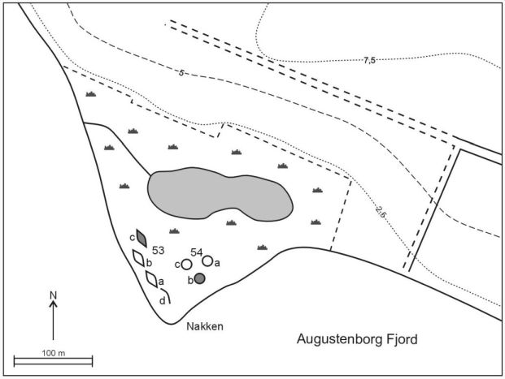
Die Schiffssetzung "53c" und der Grabhügel "54b" wurden untersucht - Zeichnung nach Jens Raben 1938
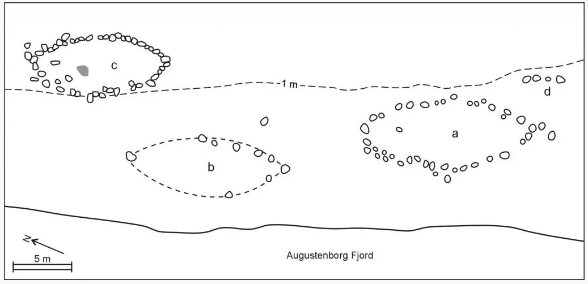
A - ca. 17 m lang und ca. 6 m breit, ca. 40 Steine
B - ca. 14 m lang und ca. 5 m breit, nur noch 9 Steine vorhanden, davon die beiden Stevensteine
C - ca. 12 m lang und ca. 4,5 m breit, nach Rabens Skizze ca. 50 Steine vorhanden
D - lediglich vier Steine - Reste einer Schiffssetzung ?
Eine der Schiffssetzungen (C) und ein Hügel wurden im Mai 1960 durch das Vorhistorische Museum Århus unter der Leitung von P.V. Glob (*20.02.1911 - 20.07.1985, Prähistorischer Archäologe, Reichsantiquar und Leiter des Nationalmuseums Kopenhagen)
 Bildquelle:
Det Danske Filminstitut -
Lizenz:
CC-BY-SA
Bildquelle:
Det Danske Filminstitut -
Lizenz:
CC-BY-SA
im Rahmen einer Lehrgrabung untersucht.
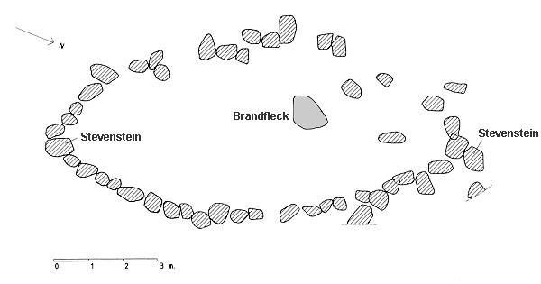
Skizze Haderslev Museum aufgrund der Untersuchung durch das Forhistorisk Museum, Århus
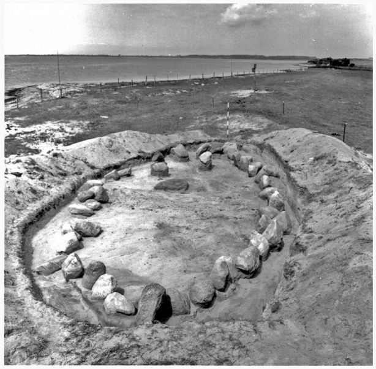
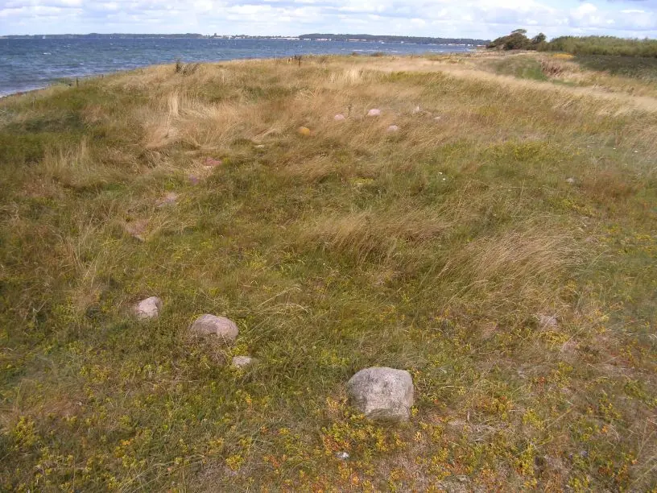
Ausgrabung von 1960 - Fotograf P. V. Glob - Quelle: oldtidsglimt.dk (Im Artikel "Die Wikingerzeit - Bestattungssitten der Wikingerzeit" / Hier ein Foto von meinem Besuch am 14.08.2009
Bei dieser Ausgrabung fand sich eine einigermaßen regelmäßige Anlage aus 45 Steinen wechselnder Größe bestehend (siehe Skizze / sw-Foto). In der Schiffssetzung fand sich ein beigabenloses Brandgrab, das sich als ca. 120 x 80 cm großer Brandfleck bemerkbar machte. Darin fanden sich ca. 35 g verbrannter Knochen, die nicht bestimmt werden konnten. In dem benachbarten Grabhügel kam ein weiteres Brandgrab zum Vorschein, das mehrere Eisennägel und Keramikscheiben enthielt. C14 Bestimmungen bestätigten eine Datierung in die Wikingerzeit.
Es handelt sich dabei um die heute noch sichtbare Schiffssetzung.
Als ich die Örtlichkeit am 27. Juli 1999 aufgesucht habe, fand ich trotz intensiver Suche nur eine Schiffssetzung. Mir zeigte sie sich als spitzovale Steinsetzung von ca. 14 m Länge, ca. 5 m Breite und bestehend aus 29 Steinen. Etliche der relativ kleinen Steine waren kaum wahrnehmbar, da sie bereits von der Wiese überdeckt waren. Wahrscheinlich sind einige der Steine bereits in die Erde niedergesunken und überhaupt nicht mehr sichtbar.
Am 10. Juli 2004 bot sich mir die Möglichkeit die Schiffssetzungen nochmals aufzusuchen. Diesmal fand ich - das Gras etwas zur Seite getreten - in dieser Schiffssetzung insgesamt 32 Steine (siehe Fotos im linken Frame). Am 14. August 2009 war ich auch vor Ort, wobei der Grasbewuchs sehr hoch war, so dass ich relativ wenig zu sehen bekam - Foto siehe oben rechts.
Die erwähnten flachen Grabhügel konnte ich nicht ausmachen. Von deren Existenz habe ich durch meine Recherchen allerdings auch erst nach meinen Besuchen erfahren.
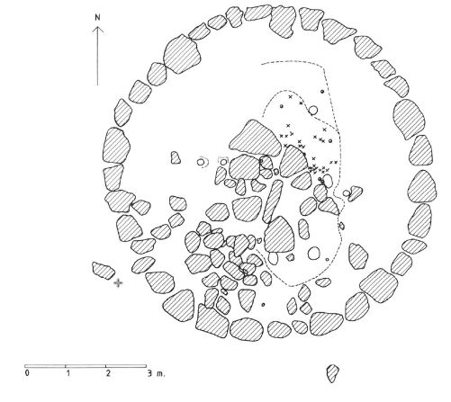
Plan der Grabung des Hügels 54b - aus: KUML 1988-89 - S. 274 - Zeichnung des Haderslev Museums nach einer Skizze des Vorhistorischen Museums Aarhus - siehe Literaturhinweise.
Der untersuchte Hügel wies eine Höhe von 0,5 m und einen Durchmesser von 13 m auf. In einem Durchmesser von 8 m waren ca. 35 Randsteine unterschiedlicher Größe gesetzt. Innerhalb dieses Kreises fanden sich weitere Steine und ein Brandfleck (2 x 5 m bei 20 cm Dicke). In der Brandschicht fanden sich Knochenteile, verschiedene Eisenfragmente und einige Tonscherben. Dazu veranlasste C14 Datierungen bewegen sich allesamt zw. 700 und 950 n. Chr.
Im Rahmen meiner 2022er Wikingertour war ich am Samstag, 18.06.2022, vor Ort. Hier ist immer noch kein Hinweisschild aufgestellt worden. Diese Infotafel vom benachbarten Dyndved Strand verweist aber auch auf diese Schiffssetzung wie man sieht.
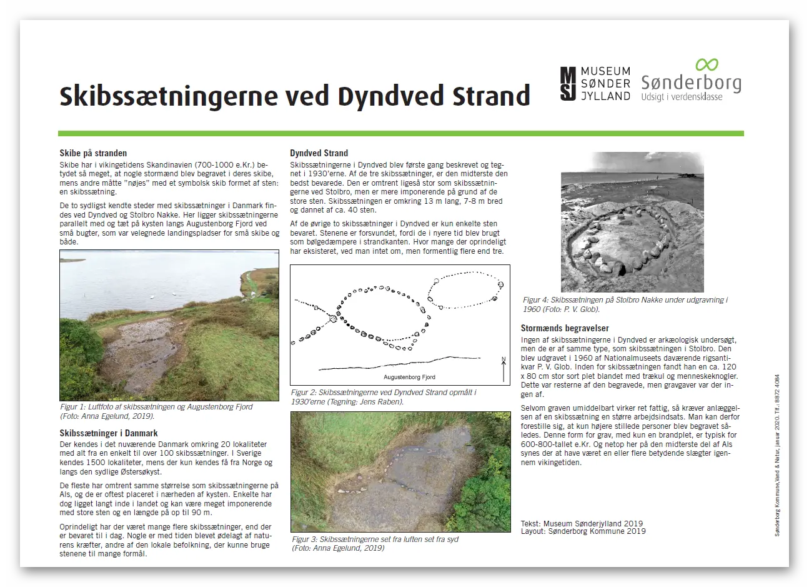
Durch den dichten Grasbewuchs war die Erkennbarkeit der Schiffssetzung zunächst eingeschränkt. Nachdem ich die Konturen etliche Male abgelaufen und das Gras etwas plattgetreten hatte, wurde es besser. Diesmal habe ich insgesamt 30 Steine - 21 auf der Seite zur See hin - 8 auf der gegenüberliegenden Seite - 1 Stein mittig im nördlichen Bereich - gezählt. Teilweise sind die Steine aber nur noch minimal an der Oberfläche mit den Füßen ertastbar. Noch bevor ich mit meinen Fotos fertig war, kam dann der Grundbesitzer von Norden mit seinem landwirtschaftlichen Fahrzeug und fuhr schräg über die Schiffssetzung zu mir hin (siehe Reifenspuren). Wir haben uns dann eine ganze Weile unterhalten; er konnte recht gut Deutsch. Der Herr konnte sich noch an die Ausgrabung vom Mai 1960 erinnern (siehe oben), da war er 13 Jahre alt - ich hingegen gerade mal 5 Monate. Seinen Ausführungen zufolge sinken die Steine leider nach und nach in die Erde (wenn er noch öfters mit seinem Fahrzeug drüber fährt ganz bestimmt!). Wenn ich hier wohnen würde, wäre die Pflege / Erhaltung der Schiffssetzung / Grabhügel eine Selbstverständlichkeit für mich! Vielleicht darf man das aber auch nicht so einfach.
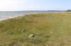 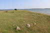 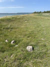 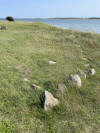 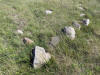 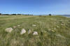 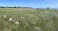 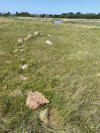 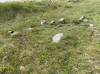


Diesmal habe ich auch erstmals Fotos am ausgefahrenen Einhandstativ, das ich in die Höhe gehalten habe, gefertigt. Das beste Ergebnis habe ich hier / daneben zum Vergleich ganz normal fotografiert:
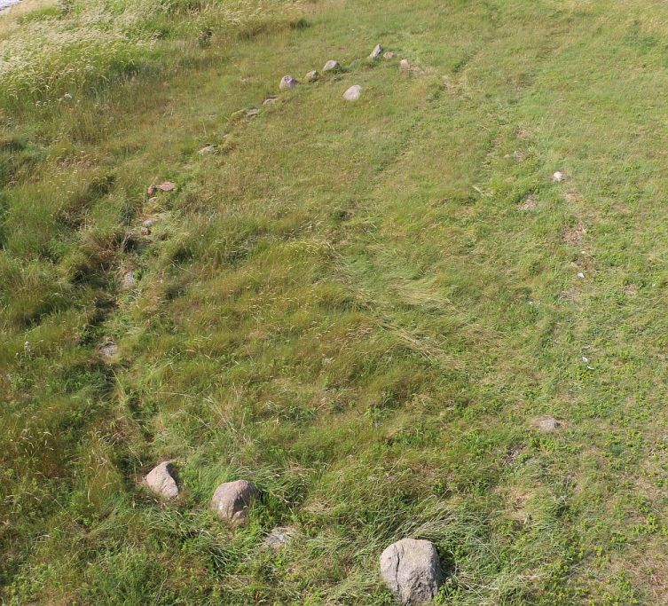
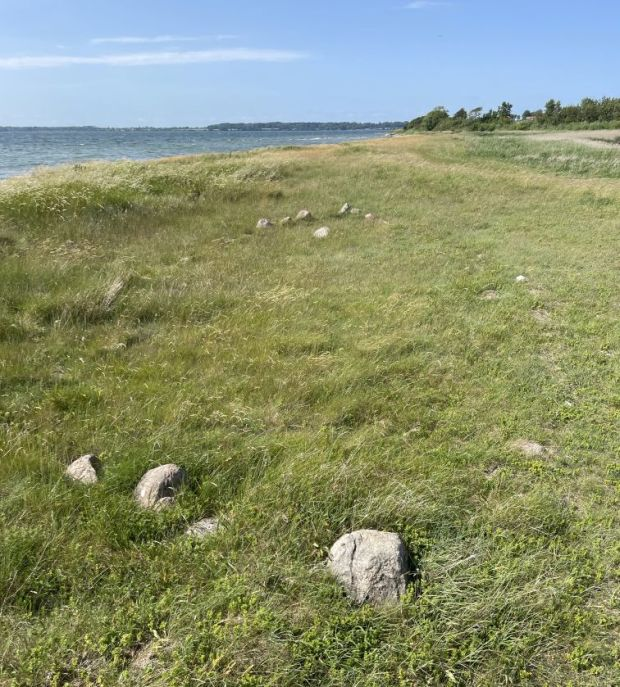
Erstmals habe ich auch nach den Grabhügeln geschaut. Die Steine, die sie kreisförmig einfassen, sind schlecht zu erkennen und fotografisch kaum zu sichern.
Auf dem GoogleMaps 2022er Foto - siehe linker Frame - sind die Grabhügel durch die Mäharbeiten von der Lage her eigentlich ganz gut erkennbar.
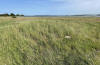 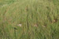 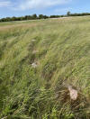


Wegbeschreibung:
Die Suche hat mich bei meinem ersten Besuch etliche Zeit gekostet. Deshalb möchte ich hier zusätzlich zum links stehenden Kartenausschnitt noch eine Wegbeschreibung anfügen. Aus Sønderborg kommend geht es über die Straße 405 in Richtung Nordborg. In Guderup geht es nach links über Dyndved und Stolbro nach Stolbro Løkke. Am Ende der Straße nach links ab und innerhalb der Maskinestation nach rechts. Der Weg verläuft nun ins freie Feld und schwenkt nach links aufs Meer zu. Am Ende des Weges, unmittelbar am Strand, direkt links vom See finden sich die Schiffssetzungen.
Bitte beachten: Ab dem Ende der Bebauung darf man den Weg zum Strand nur zu Fuß zurücklegen - Privatgrund! - Gehzeit ca. 10 Min.
Diese Verlinkung - http://oldtidsglimt.dk/location/skibe-pa-stranden/ - führt nicht mehr zu der ursprünglichen, ehemals sehr informativen Seite (Text in dänisch, Videoklip, etliche Fotos/Skizzen). Es wurde eine Veränderung durch die Entwickler vorgenommen und man kommt nun darüber an eine Art App. In der kann man unten über "Artikler" nach dem Wort "Skibe" suchen und sollte den entsprechenden Beitrag finden. Bei mir funktioniert es allerdings am Laptop nicht. Da sieht man nicht alles und kommt von daher nicht weiter. Über den Link kommt man aber am iPhone / iPad wenigstens zu dem Artikel, kann sich den in dänisch gehaltenen Text durchlesen und auch vorlesen lassen, aber man sieht nur eine Bild (Die Skizze hier ganz oben), obwohl etliche andere vorhanden sind - Mailverkehr mit dem Entwickler hat mich nicht weitergebracht - es läge an meinen Geräten (?) - 30.03.2022 - sehr schade!
Den u.a. Video (Nur Bilderabfolge - knapp 5 Minuten lang) mit dem Titel "Fortællingen om skibssætninger på Als fra vikingetiden" kann man sich immerhin über YouTube anschauen.
Darin wird der Text aus der App vorgelesen und die Skizzen/Fotos in einer Abfolge gezeigt. Es werden auch die unweit von hier befindlichen Schiffssetzungen am Strand von Dyndved besprochen/gezeigt.
Den Eintrag zu der Schiffssetzung in "Fund og Fortidsminder" findet man hier. Dort sind drei Fotos - wohl aus 2018 - eingestellt. Allerdings sieht man darauf von der Schiffssetzung nicht mehr wirklich viel!
Dieses (von mir zugeschnittene) Luftfoto ist von der Webseite "Skråfoto" mit Aufnahmedatum 17.06.2021 (Download 04.07.2022). Skråfoto ist eine Webanwendung, die von Klimadatastyrelsen weltweit kostenlos bereitgestellt wird - Freie Nutzung unter Beachtung der Lizenz: CC BY 4.0
Über diese Webseite wird nach Eingabe der Anschrift die Örtlichkeit mit mehreren Aufnahmen aus den verschiedenen Himmelsrichtungen wiedergegeben.
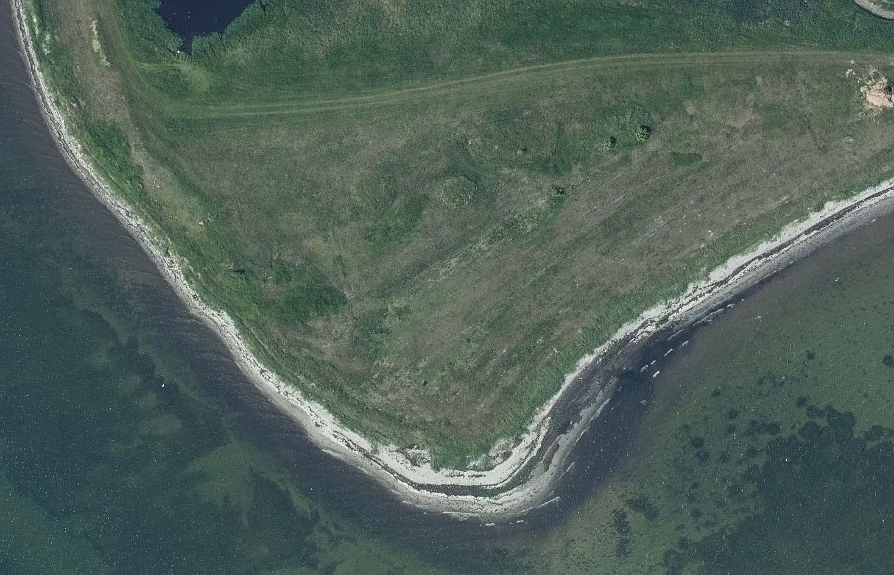
Die Schiffssetzung 53c und der mit Steinen eingerahmte Grabhügel 54b sind sehr gut erkennbar.
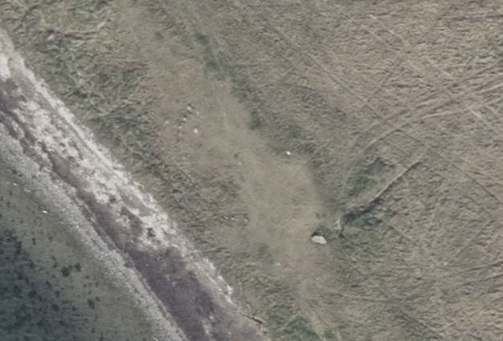
Das ist ein aktuelles Luftfoto vom 09.04.2023 von Skråfoto - Screenshot vom 30.10.2023.
Literaturhinweise:
Jens Raben - Oldtidsminder paa Als - 1938 - in: Fra Als og Sundeved - XIV. Hefte - S.69-72
Jens Raben - 1948 - Skibssætninger - Sønderjydsk Månedsskrift - 24. årgang - S. 75ff.
Steen Wulf Andersen - 1979 - Mellem Kongeå og grænse i den sene jernalder - En arkæologisk oversigt - in: Nordslesvigske Museer - Årbog for museerne i Sønderjyllands amt - 6.
KUML 36 - 1988/89 - Andersen, S. W., & Davidson, J. - Alsiske brandgrave fra den yngre jernalder - S. 249288